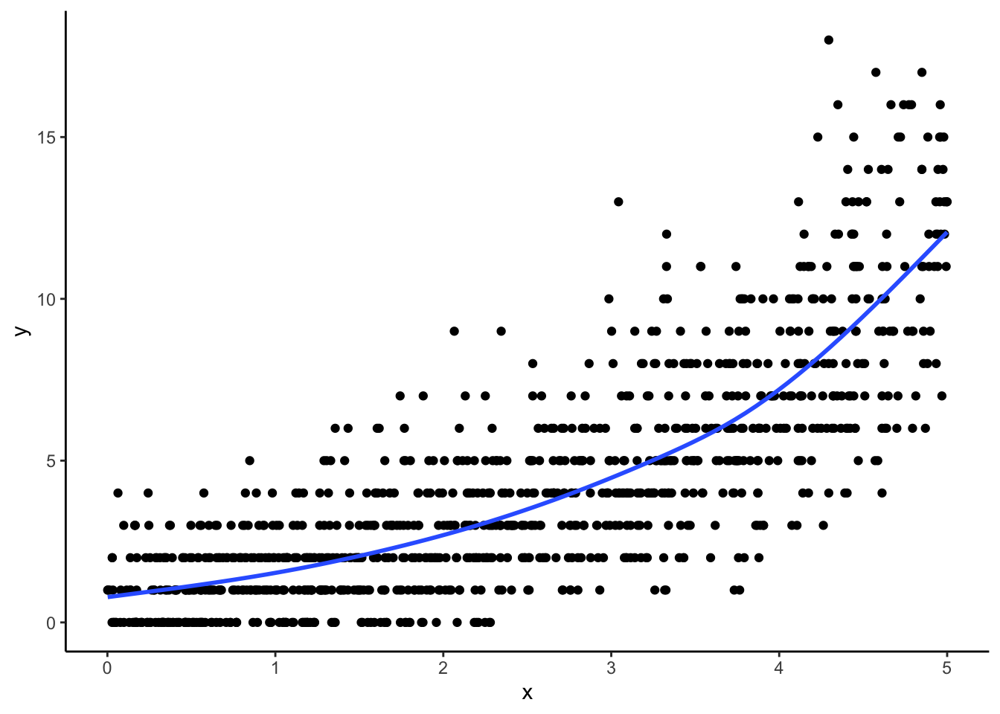
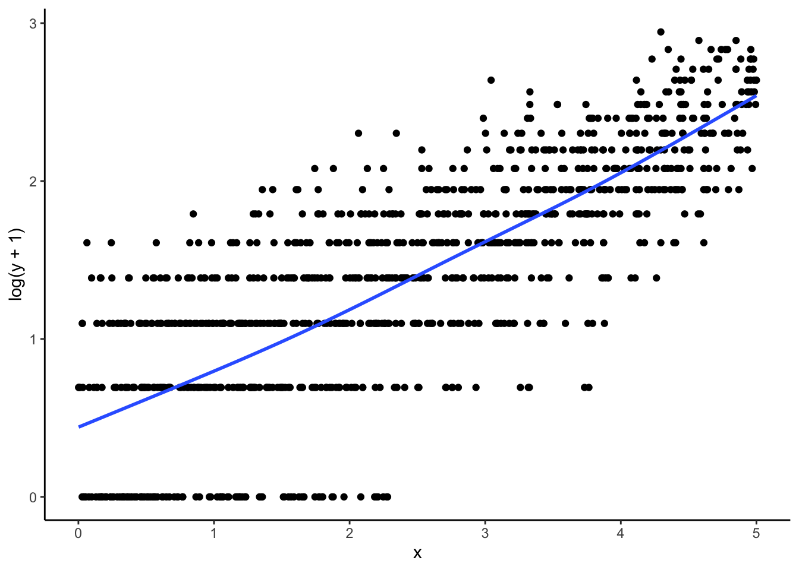

When predicting either successes and failures, or proportions, we can use a model with a binomial outcome. Here we’ll focus on models where the data is represented as individual successes and failures. The canonical model for these data is logistic regression, where
We can interpret \(\beta_0\) as follows: for observations which are 0 on all of the predictors, we estimate that the mean value of the outcome will be \(\frac{e^{\beta_0}}{1 + e^{\beta_0}}\). That is, we estimate that the probability of the outcome being a ‘success’ (assuming ‘success’ is coded as a 1) will be \(\frac{e^{\beta_0}}{1 + e^{\beta_0}}\).
We can interpret \(\beta_1\) as follows: adjusting for the other predictors, a one-unit difference in \(X_1\) predicts a \(\beta_1\) difference in the log-odds of the outcome being one, or a \((e^{\beta_1}-1)\times100\%\) difference in the odds of the outcome. Unfortunately, the change in probability of a unit change depends on where the starting point is, so there is no easy way to interpret these coefficients in terms of direct probability. One can calculate the estimated change for specific units, however, and look at the distribution of those changes.
Other possible link functions include the probit (which uses a Normal CDF to link \(\beta_0 + \beta_1X_1 + ... + \beta_pX_p\) to \(P(Y=1|X)\)), or the complementary log-log (which allows \(P(Y = 1|X)\) to be asymmetric in the predictors), among others.
28.1.1 How to fit a GLM
We can fit a logistic regression model by writing
glm(Y \(\sim\) X, family = binomial(link = ‘logit’))
We can fit a probit regression model by writing
glm(Y \(\sim\) X, family = binomial(link = ‘probit’))
We can fit a complementary log-log model by writing
glm(Y \(\sim\) X, family = binomial(link = ‘cloglog’))
We can allow a random slope and intercept by writing
glmer(Y \(\sim\) 1 + X + (1 + X|grp), family = binomial(link = ‘logit’))
28.2 Interpreting multilevel logistic regressions
In this section, we give some further discussion about logistic regression and interpretation. This section supplements Packet 6.2 (logistic and longitudinal, or the toenail data lecture). But also see the code supplement for Packet 6.2 for more in-depth analysis and commentary.
We first fit our toenail data using a random intercept model:
glmer(formula = outcome ~ Tx * month + (1 | patient), data = toes,
family = binomial, control = glmerControl(optimizer = "bobyqa",
optCtrl = list(maxfun = 1e+05)))
coef.est coef.se
(Intercept) -2.51 0.76
TxItraconazole -0.30 0.69
month -0.40 0.05
TxItraconazole:month -0.14 0.07
Error terms:
Groups Name Std.Dev.
patient (Intercept) 4.56
Residual 1.00
---
number of obs: 1908, groups: patient, 294
AIC = 1265.6, DIC = -25.6
deviance = 615.0
Now let’s interpret. We have three different ways of looking at these model results, log-odds (or logits), odds, or probabilities themselves.
log-odds: The predicted values and coefficients are in the log-odds space for a logistic model. The coefficient of month means each month the log-odds goes down by 0.40. The baseline intercept of -2.51 mean that a control patient at month=0 has a log-odds of detachment of -2.51.
Using our model, if we wanted to know the chance of detachment for a median treated patient 3 months into the trial we could calculate:
For a patient who has a 1 SD above-average proclivity for detachment, we would add our standard deviation of 4.56:
log_odds +4.56
[1] 0.135
odds: The odds of something happening are the chance of happening divided by the chance of not happening, or \(odds = p/(1-p)\). To convert log-odds to odds we just exponentiate:
The intercept is our base odds: the odds of detachment at month=0 for a control patient. The rest of the coefficients are odds multipliers, multiplying our baseline (starting) odds. For example, each month a control patient’s odds of detachment gets multiplied by 0.671.
Note that exponentiation and logs play like this (for a control patient at 2 months, in this example) \[ odds = exp( -2.51 + 2 * -0.40 ) = exp( -2.51 ) \cdot exp( 2 * -0.40 ) = exp( -2.51 ) \cdot exp( -0.40 )^2 \] See how \(exp( -0.40 )\) is a multiplier on the baseline \(exp( -2.51 )\)?
We can rewrite this as \[
\begin{aligned}
odds( Y_{ij} = 1 ) &= \exp\left[ \gamma_{00} + \gamma_{01} Z_j + \gamma_{10} Time_{ij} + \gamma_{11} Z_j Time_{ij} + u_j \right] \\
&= e^{\gamma_{00}} + e^{\gamma_{01} Z_j} + e^{\gamma_{10} Time_{ij}} + e^{\gamma_{11} Z_j Time_{ij}} + e^{u_j} \\
&= e^{\gamma_{00}} \cdot e^{\gamma_{01} Z_j} \cdot \left(e^{\gamma_{10}}\right)^{Time_{ij}} \cdot \left(e^{\gamma_{11}}\right)^{Z_j Time_{ij}} \cdot e^{u_j}
\end{aligned}
\] See how all our additive covariates turn into multiplicative factors? And time exponentiates our factors, so we keep multiplying by the factor for each extra month.
For our two 3 month, treated patients, we have the odds of detachment of
exp( c( log_odds, log_odds +4.56 ) )
[1] 0.012 1.144
Multipliers that are less than 1 correspond to reductions in the odds. A multiplier of 0.67 (the month coefficient) is a 33% reduction, for example. For the treatment group, the multipliers get multiplied, giving 0.67 * 0.87 = 0.58, or a 42% reduction. We can use these calculations to discuss the impact of treatment. For example, we might say, “We estimate that taking the treatment reduces the odds of detachment by 42% per month, vs. only 33% for the control.”
Probabilities: Finally, we have probabilities, which we can calculate directly with invlogit in the arm package or plogis in the base package:
plogis( c( log_odds, log_odds +4.56 ) )
[1] 0.0118 0.5336
Here we have a 1% chance of detachment at baseline for our median patient, and 53% chance for our 1SD above average patient.
28.2.1 Some math formula for reference
The relevant formula are:
\[
odds = \frac{ prob }{1 - prob}
\]
giving (letting \(\eta\) denote our log odds) \[
prob = \frac{ odds }{ 1 + odds } = \frac{ \exp( \eta ) }{ 1 + \exp(\eta)} = \frac{1}{1 + \exp(-\eta) }
\] The second equality is a simple algebraic trick to write the probability as a function where the log-odds (\(\eta\)) appears only once.
28.2.2 More on the random intercept
The random intercepts represent each patients overall proclivity to have a detachment. High values means that patient just has a higher odds of detachment, and low values means less.
If we exponentiate our Empirical Bayes estimated random intercepts, we get multiplicative factors of how each patient’s odds are just shifted by some amount. E.g.,
REs =ranef( M1 )$patient$`(Intercept)`head( REs )
[1] 4.81 2.83 1.81 1.82 4.31 4.42
summary( REs )
Min. 1st Qu. Median Mean 3rd Qu. Max.
-1.28 -1.03 -0.97 1.35 3.90 10.26
quantile( exp(REs), c( 0.05, 0.95 ) )
5% 95%
0.291 469.145
This means the odds of detachment for some patients (the 5% least likely to have detachment) is 30% of the baseline detachment. For a 95th percentile patient, we have an odds multiplier of around 470—they are much, much more likely to have detachment at any moment in time. This is why the curves for the patients in the main lecture are so different.
To recap: our model says the baseline median patient has a very low chance of detachment. For many patients it is even lower than that, but many other patients have very high random intercepts which makes their chance of detachment much, much higher.
28.2.3 Growth should have random slopes?
We can try to fit a random slope model, allowing for each patient’s growth in their log-odds to be different. This is a longitudinal linear growth model, with binary outcome:
The random slope model is strongly preferred, and also has a larger estimated effect of treatment, although the standard errors have also grown considerably. What is likely happening is the autoregressive pattern in our outcomes (note how we tend to see 1s followed by 0s, with not a lot of back and forth) coupled with the limited information we have for each patient, makes it hard to nail down differences in individual student growth vs. differences in treatment and control average growth. The random intercept model focuses on within-person change, but is an easier to estimate model. Due to randomization, it is also trustworthy–we do not have to worry much about the assumptions.
28.3 Poisson regression models
Poisson regression is sometimes used to model count data. The canonical form of a Poisson (log-linear) regression model is \[\log(E[Y|X]) = \beta_0 + \beta_1X_1 + ... + \beta_pX_p\]\[Y \sim Poisson(E[Y|X])\]
The Poisson distribution has only one parameter, the mean, which is also the variance of the distribution. So in estimating \(E[Y|X]\), we are also estimating \(Var(Y|X)\). This is a potential drawback to the Poisson model, because there is no variance parameter to estimate, and so incorrect models can give wildly inaccurate standard errors (frequently unrealistically small). A better model is a quasi-Poisson model, for which the variance is proportional to the mean, but not necessarily equal to it. The negative binomial regression model is also commonly used to address over-dispersed count data where the variance exceeds the mean.
The canonical link function for Poisson outcomes is the natural logarithm. When we use a log-link, we can write
We can interpret \(\beta_0\) as follows: for observations which are 0 on all of the predictors, we estimate that the mean (expected) value of the outcome will be \(e^{\beta_0}\).
We can interpret \(\beta_1\) as follows: adjusting for the other predictors, a one-unit difference in \(X_1\) predicts a \((e^{\beta_1}-1)\times100 \%\) difference in the outcome.
Generally, when using a log-link, we assume that differences in the predictors are associated with multiplicative differences in the outcome.
Some advantages to using an exponential link are
the model is mathematically more tractable and simpler to fit
the model parameters are easy to interpret
the mean of \(Y\) is guaranteed to be positive for all values of \(X\), which is required by the Poisson distribution
28.3.1 How to fit a poisson regression
We can fit a Poisson log-linear regression by writing
glm(Y \(\sim\) X, family = poisson(link = ‘log’))
To fit a quasi-Poisson model, write
glm(Y \(\sim\) X, family = quasipoisson(link = ‘log’))
To fit a negative binomial regression model, write (after loading the MASS library)
glm.nb(Y \(\sim\) X, link=‘log’)
To fit a Poisson regression with an identity link (where coefficients are interpreted as expected differences in the outcome associated with unit differences in the predictor), write
glm(Y \(\sim\) X, family = poisson(link = ‘identity’))
To fit a Poisson regression with a square root link, which is vaguely like a compromise between an identity link and a log link (and is harder to interpret than either), write
glm(Y \(\sim\) X, family = poisson(link = ‘sqrt’))
To fit a Poisson log-linear model with a random intercept and slope, write
glmer(Y \(\sim\) X + (X|grp), family = poisson(link = ‘log’))
28.4 GLMs vs. Transformations
Those of you coming from S40 and S52 may recall that when we have non-linear relationships between \(X\) and \(Y\), we can apply a transformation, such as taking the log, to linearize the relationship. In the words of Jimmy Kim, “with transformations, we use the machinery of linear regression to model non-linear relationships.” If that’s the case, then what is Poisson regression about, which deals with log counts? This is a topic that confused me for many years so hopefully I can clear it up here.
28.4.1 Making and Graphing the Data
Let’s start by making some fake data. Here’s the data-generating function, which has the relationship that a 1-unit increase in x will increase the expected count by \(e^.5 = 1.65\).
In the graph, we can see that the relationship between x and y is clearly non linear!
ggplot(dat, aes(x = x, y = y)) +geom_point() +geom_smooth(se =FALSE)

Let’s plot log_y + 1 on x. Amazing! The relationship is basically linear, which suggests that a 1-unit increase in x has some multiplicative effect on y.
ggplot(dat, aes(x = x, y =log(y +1))) +geom_point() +geom_smooth(se =FALSE)

28.4.2 Fitting the Regression Models
Let’s use both OLS and Poisson regression to fit the data. We see a few things:
The Poisson model fits drastically better, both in terms of \(R^2\) and that the coefficients are close to the data-generating values
The transformed OLS model understates the slope
Both models have (seemingly) similar interpretations: a 1-unit increase in x causes an \(e^\beta\) increase in y. How is this possible?
So what’s going on?
The answer is that there is a very subtle difference between a transformed OLS regression and a Poisson regression. In transformed OLS, we are modeling the mean of the log of Y, or \(E(ln(y|x))\). In Poisson, we’re modeling the log of the mean of Y, or \(ln(E(y|x))\). These are not equivalent! In essence, Poisson regression is a model for the arithmetic mean, whereas OLS is a model for the geometric mean. This means that when we exponentiate the Poisson model, we can get predicted counts, but this is not true of the OLS model.